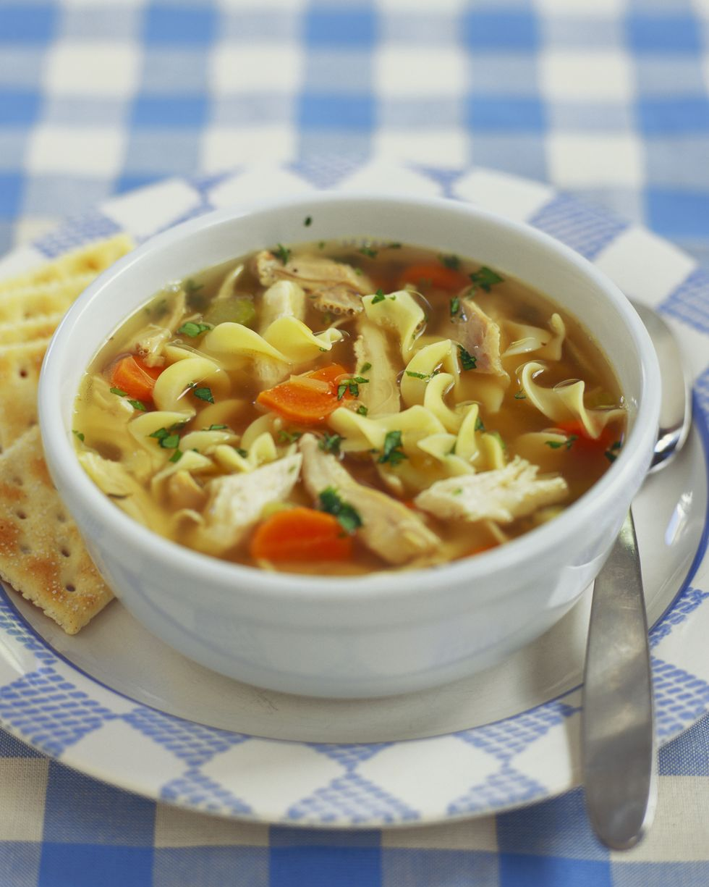

Chicken Noodle Soup

A delicious classic made with simple ingredients
Our version of the ultimate feel-good food, Homemade Chicken Noodle Soup, is chock-full of seasonal vegetables like leeks, carrots, celery, and onions. Slowly cooking a whole chicken, fragrant herbs, and fresh vegetables in chicken broth rather than water imparts a rich flavor to this soup.
Ingredients
- 1 3 1/2 pound chicken, whole
- 3 qt. low-sodium chicken broth
- 6 carrots, peeled
- 4 ribs celery, ends trimmed
- 3 medium onions, peeled
- 5 black peppercorns
- 1 clove garlic, crushed
- 2 sprigs thyme
- 1 bay leaf
- 2 tbsp. unsalted butter
- 4 leeks, tops and root ends removed
- 1 tsp. salt
- 1 tsp. fresh-ground pepper
Steps
- Make the stock: Place the chicken and chicken broth in a large stockpot and set it over medium heat. Roughly chop 2 carrots, 2 celery ribs, and 1 onion and add to the broth. Add the peppercorns, garlic, 2 sprigs of parsley, thyme, bay leaf, and enough water to just cover the chicken. Bring the broth to a boil, reduce heat to a simmer, and cook until the chicken is very tender—about 1 1/4 hours—skimming the surface periodically. Remove the chicken and place in a large bowl. Strain the broth through a very fine sieve into a large, clean bowl or stockpot. Discard the vegetables.
- Make the soup: Skim any fat off the top of the strained broth and discard. Slice the remaining carrots, celery, onions, and leeks into 1/4-inch-thick pieces and set aside. Remove and discard the skin and bones from the chicken, cut meat into 1/2-inch pieces, and set aside. Chop the remaining parsley leaves and set aside. Melt the butter in a large Dutch oven over medium heat. Add the vegetables and cook until the onions are translucent—about 7 minutes. Add the chicken, the reserved broth, salt, and pepper. Simmer the soup until the vegetables are tender—about 1 hour. Stir in the egg noodles and parsley and cook until the noodles are tender—about 10 more minutes. Serve hot.